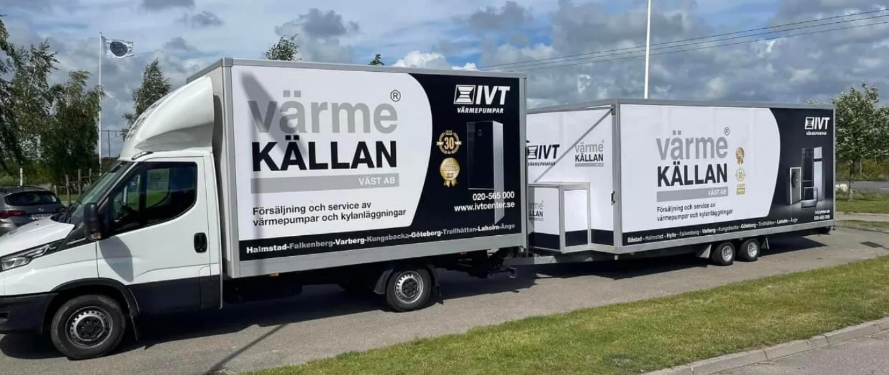

Människorna bakom
din värme.
Ett familjeföretag med över 30 års erfarenhet. Värmekällan Väst AB är Sveriges första IVT Center och hjälper dig med installation, service och långsiktig trygghet.

Från första IVT-centret
till ditt hem.
I början av 1990-talet startade P-O Kallies Sveriges första IVT-center. Tillsammans med sin son utvecklade han verksamheten till det familjeföretag som idag hjälper kunder med värmepumpar längs västkusten och på fler orter.
Sedan 2006 är även Energimannen en del av Värmekällan.
Hitta ditt teamVärmekällan Väst AB / IVT-Center Väst
Med över 30 års erfarenhet och 10 000 installerade värmepumpar, bred kompetens och nöjda kunder, kan Värmekällan Väst AB stolt säga att de har vad som krävs när det kommer till service och installation av värmepumpar och kylmaskiner.
Värmekällan Väst AB är Sveriges äldsta IVT-Center och sedan 2006 är även Energimannen en del av Värmekällan.
Om Värmekällan Väst AB / IVT-Center Väst
I början på 1990-talet startade P-O Kallies Sveriges allra första IVT-center och lade då upp modellen för hur tillverkaren IVT skulle arbeta utåt marknaden. Efter att ha bedrivit värmepumpsföretag under många år, både i Sverige och utomlands, startade han tillsammans med sin son, Värmekällan Göteborg AB, ett företag som servar alla typer av värmepumpsfabrikat. Samtidigt så fortsatte försäljningsverksamheten av värmepumpar under namnet IVT-Center Väst. Målet att bredda verksamheten på västkusten ledde till det senaste förvärvet, Energi och Värme-pumpsmannen.
Trygghet och kvalitet
Med så pass lång erfarenhet har familjeföretaget samlat på sig en hel del referenser av nöjda kunder, vilket borgar för trygghet och kvalitet för alla installationer som utförs och servas.
Kompetens och erfarenhet
Vi har den kompetens och erfarenhet som krävs, och de goda omdömen som vi fått under åren är ett kvitto på det. Den tryggheten vill vi att alla våra kunder ska känna, såväl befintliga som nya kunder här i Halmstad. Vi täcker hela södra regionen i Halland, från Varberg till Falkenberg, Halmstad, Båstad och Bjärehalvön med personal från Energimannen.
Trygghet och kvalitet Kompetens och erfarenhet Vad innebär er Nöjd-Kund-Garanti?
- Vi följer alltid upp våra kunder och installationer och följer IVT:s krav för att kunna hålla garantin för våra kunder. Inom en femårsperiod efter en installation så återkommer vi alltid två gånger. Många kunder tecknar dessutom serviceavtal med oss där vi varje eller vartannat år gör personliga besök och kontrollerar värmepumpens prestanda och funktion. Vi tycker det är väldigt viktigt med det personliga besöket där kunden får ett besök av oss och kan ställa frågor och få hjälp med funktioner eller inställningar.
Skulle mot förmodan något oväntat inträffa, så har vi dessutom jour dygnet runt under hela året. I och med de stora anläggningar som vi sköter (upp till 40 borrhål), bland annat åt kommuner och skolor så är det krav på att vi alltid är anträffbara. Det är något som även våra privatkunder kan dra nytta av under hela värmepumpens livstid. Det går alltid att få tag på oss, till och med på julafton eller midsommar.
Förtroende som
värmer.
Några ord från kunder, publicerade på företagets originalsida.
Läs fler kundomdömen”Personlig, snabb och riktigt bra service!”
”Nöjda ☺️ Från första telefonkontakt till färdig installation !”